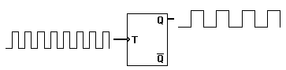
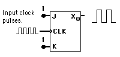

The T Flip-Flop
|
The T or "toggle"
flip-flop changes
its output on each
clock edge, giving
an output which is
half the frequency
of the signal to the T input.
|

|
It is useful for constructing binary counters, frequency dividers, and general binary addition devices. It can be made from a J-K flip-flop by tying both of its inputs high.
|
Construction of T flip-flop from a J-K flip-flop.
|

|
|
Index
Electronics concepts
Digital circuits
Sequential Operations |